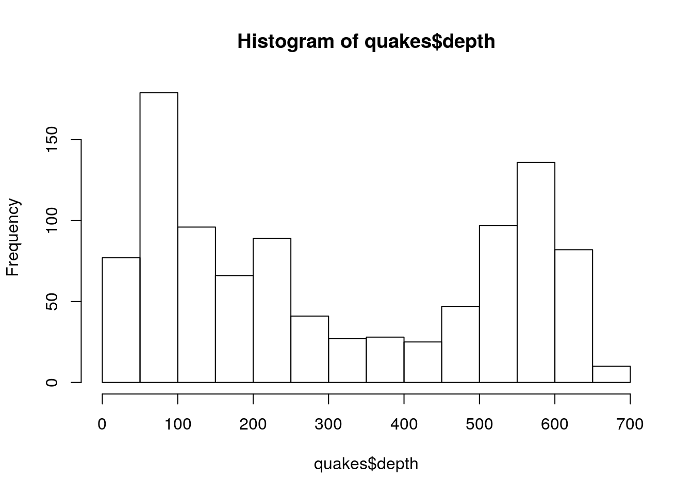

Python and R are two different yet similar languages. I would say that if you want to try and interpret data and present it in a visually appealing and digestible way then use R, but python can do the exact same things but it also contains more capabilites and options to do other things. One fun fact is that R and python can work together to generate data and results. In the example below, what you can do with python and R is save two different variables in the r format then in python format and have them print out together, and this can all be done with the help of reticulate! For me, this is really interestng because its like how we speak two different languages. I speak vietnamese and english, so when I'm at home, I speak mostly vietnamese to my grandparents, but of course I sometimes forget and speak english to my grandparents. My grandparents are still able to understand me even and give me an answer even though they themselves cannot speak english. That is how I picture r and python to work. They are able to understand eachother, even though they are different coding languages, generating results and various outputs we desire. In the example below, I saved a variable in r and another in python, but I printed them both out together in python, and of course just like how my grandparents were able to understand my english, python understands the r code and is able to generate the output that I requested!
library(reticulate)
im<-"Lets go get some food before I lose my mind"hungry="I was thinking Thai food!"
print(r.im,hungry)## Lets go get some food before I lose my mind I was thinking Thai food!In another example, I loaded the datasets "quakes" and generated a histogram in an r code chunk; however when interpreting (extrapolating) I used a python code, and I was stillable to gernerate results!
quakes<-quakes
hist(quakes$depth)
r.quakes.depth.describe()## count 1000.000000
## mean 311.371000
## std 215.535498
## min 40.000000
## 25% 99.000000
## 50% 247.000000
## 75% 543.000000
## max 680.000000
## Name: depth, dtype: float64In conclusion, r and python are both extremely valuable coding langauges that I have gotten the joy of learning. They provide so many possibilities, specifically with interpreating and presenting data in visually digestible manners.